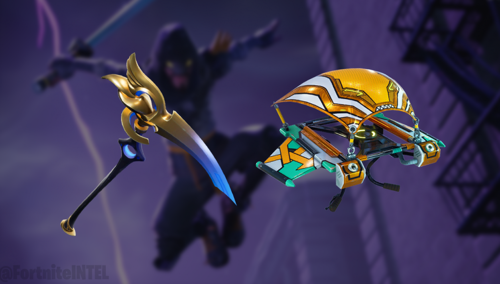
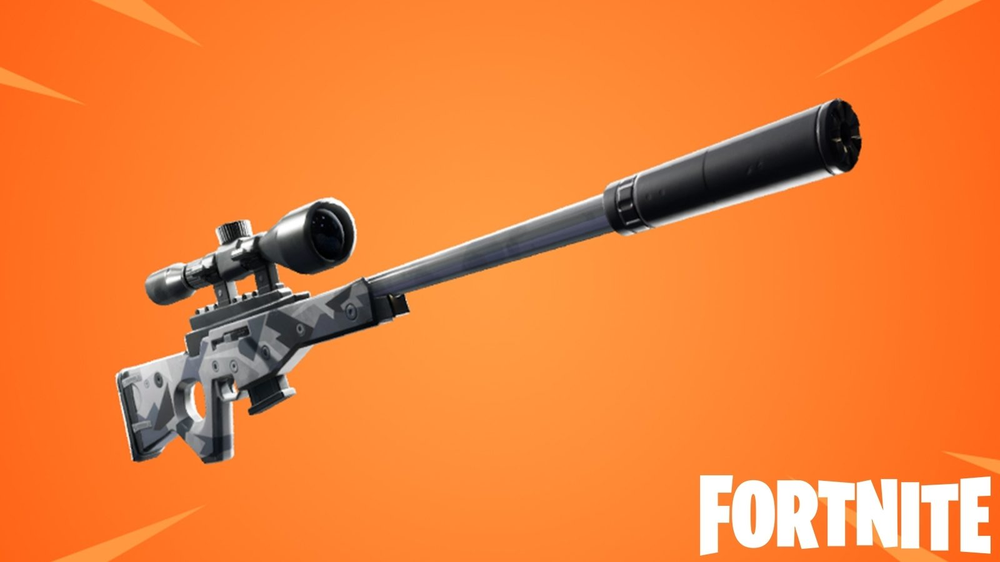
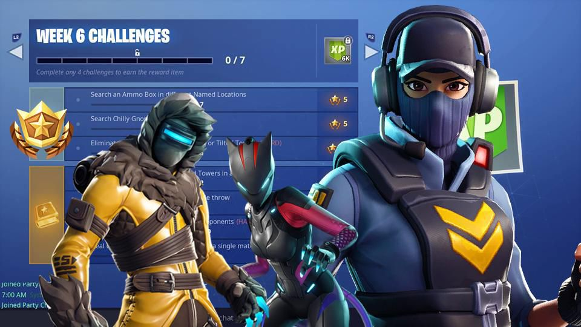

Your daily dose of Fortnite News, Fan Art and more!
Fortnite just won a Game of the Year title - in 2018. Epic Games' popular multiplayer shooter claimed the crown at the Golden Joysticks, inexplicably beating out Red Dead Redemption 2 and God of War, a game that many critics believed would be the runaway favorite to sweep up Game of the Year accolades at industry award shows this year.
On the surface, Fortnite being a contender, and even winning, Game of the Year awards makes sense.
The game has become so massively successful that it has genuinely begun to impact industries that are usually adjacent to the video game world, with some professional sports teams banning Fortnite after coaching staff believed it was causing a rift among players. Twitch superstar and dedicated Fortnite streamer Tyler "Ninja" Blevins continues to make a name for himself as one of the wealthiest streamers in the world as well, showcasing the viability and longevity of Epic Games' battle royale monster.
Fortnite season 7 will see a ripped Father Christmas invade Battle Royale island with an army of snowmen warriors in biplanes.
Vast areas of the Fortnite map are getting an icy makeover - including Tilted Towers - with several new areas added, and ziplines between mountainous areas.
You'll also be able to pilot Santa's planes for yourself. Named the X-4 Stormwing, the biplane is a new five-player vehicle with a mounted machine gun.
The Battle Pass, meanwhile, will include new vehicle and weapon skins named Wraps, plus more pets (a hamster! a skull!) and toys (an ice puck!). The legendary tier 100 skin is a fearsome chap named The Ice King. Maybe he's Santa's boss?
And then there's the new Creative Mode, announced yesterday, which Battle Pass owners get a week's early access to today. There's a lot - will you be paying up again?
Other changes made at the start of this season include the reworking of balloons (you can now fire and float) and the removal of the following items to the vault: Shadow Stones, Port-a-Fort, Chiller traps, Clinger bombs, the Double Barrel Shotgun and the Shockwave Grenade.
Legendary sword Epic teased last night is the Infinity Blade, the titular weapon from the developer's mobile game, and you'll be able to get your hands on it today. It's a mythic sword only found on Polar Peak and only one will appear per match.
The Infinity Blade can destroy buildings and kill enemies with one hit, doing 75 damage to humans, and there's an alternate fire that lets players leap great distances and cause plenty of destruction.
Wielders of the sword get supercharged with magic! and increased health that also regenerates at 1 HP per second, a burst of health with every slain enemy and increased movement speed.
You can only carry the sword, however, and nothing else, aside from building materials. If you pick up another item, the sword gets dropped and someone can pinch it right from under your nose.
All unreleased Fortnite cosmetics

The final Fortnite v7.10 Content Update has passed. Before the next significant update arrives and brings more, here is a look at all unreleased cosmetics.
Many Fortnite fans are interested in seeing what Epic has up their sleeves, before it is officially released or revealed. With every patch, dataminers scour the files in search of new assets. It’s almost certain that the following updates will bring even more cosmetic assets, stay tuned.
Vision (Rare Pickaxe) ?? V-Bucks Unending gaze.
Helium (Uncommon Glider) ?? V-Bucks Lighter than air.
Fortnite Update Adds Suppressed Sniper
Fortnite fans will soon have a new weapon to get to grips with, as the battle royale title’s in-game news screen was officially updated to announce the arrival of a new version of the sniper rifle. Fortnite already has a wide range of sniper rifles, from the Bolt Action Sniper to the Hunting Rifle, which is a sniper rifle with the scope removed. In addition to the rifles already in the game, Epic Games are introducing the Suppressed Sniper Rifle, which will mark the first time that a suppressed version of the sniper rifle will make an appearance in the game
This week's Fortnite challenges
It's time to find some gnomes. If you're new to Fortnite, gnome hunts have been one of the most consistent challenges in the game, for whatever reason. We've had straight-up hidden gnomes, we've had laughing gnomes, we've had hungry gnomes: the Fortnite island is in no manner short on gnomes, and that's just all there is to it. This week we're embracing the winter theme, like you might guess. The Season 7, Week 6 challenges are live, and so read on for where to find 7 chilly gnomes to search in Fortnite: Battle Royale, complete with guide, map and locations.